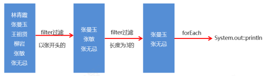

此部分记录了使用Java进行流式编程的思想与使用方法，共分为「Stream流思想、Stream流的使用、Stream流的收集操作」三个基础部分。因为流的中间操作方法较多，所以另外提供了一个流操作的综合实例。
Stream流思想
Stream流的操作一般分为三个流程：生成流 、中间操作、终结操作

Stream流的使用
Stream流的生成
方法
Stream流可以直接生成Collection体系集合以及数组，对于Map体系的集合，需要把Map转成Set集合
| 数据类型 |
方法名 |
说明 |
| Collection体系集合 |
default Stream stream() |
默认方法stream()生成流 |
| 数组 |
static of(T… Values) |
静态方法生成数组流 |
| Map体系 |
需要使用 keySet() values() entryStream()
来将Map体系转为Set集合，再利用 stream() 转为流 |
间接生成 |
示例
1
2
3
4
5
6
7
8
9
10
11
12
13
14
15
16
17
18
19
20
21
22
23
| public static void main(String[] args) {
List<String> list = new ArrayList<>();
Stream<String> listStream = list.stream();
Set<String> set = new HashSet<>();
Stream<String> setStream = set.stream();
Map<String, Integer> map = new HashMap<>();
Stream<String> keyStream = map.keySet().stream();
Stream<Integer> valueStream = map.values().stream();
Stream<Map.Entry<String, Integer>> entryStream = map.entrySet().stream();
String[] strArray = {"1", "2", "3", "4", "5"};
Stream<String> strArrayStream = Stream.of(strArray);
Stream<String> stringStream = Stream.of("hello", "world");
Stream<Integer> integerStream = Stream.of(1, 2, 3, 4, 5);
}
}
|
String流的中间操作
方法
这里方法较多，可以参考文档使用
| 方法名 |
说明 |
| Stream filter(Predicate predicate) |
用于对流中的数据进行过滤 |
| Stream limit(long maxSize) |
返回此流中的元素组成的流，截取前指定参数个数的数据 |
| Stream skip(long n) |
跳过指定参数个数的数据，返回由该流的剩余元素组成的流 |
| static Stream concat(Stream a, Stream b) |
合并a和b两个流为一个流 |
| Stream distinct() |
返回由该流的不同元素（根据Object.equals(Object) ）组成的流 |
| Stream sorted() |
返回由此流的元素组成的流，根据自然顺序排序 |
| Stream sorted(Comparator comparator) |
返回由该流的元素组成的流，根据提供的Comparator进行排序 |
| Stream map(Function mapper) |
返回由给定函数应用于此流的元素的结果组成的流 |
| IntStream mapToInt(ToIntFunction mapper) |
返回一个IntStream其中包含将给定函数应用于此流的元素的结果 |
Stream流的终结操作
方法
| 方法名 |
说明 |
| void forEach(Consumer action) |
对此流的每个元素执行操作 |
| long count() |
返回此流中的元素数 |
流的收集操作——工具类Collectors
作用
把流收集成为“List”“Set”“Map”等集合
需要使用 collect(Collectors.×××) 其中括号里的 Collectors 是一个工具类
Collectors方法
| 方法名 |
说明 |
| public static Collectors toList() |
把元素收集到List集合中 |
| public static Collectors toSet() |
把元素收集到Set集合中 |
| public static Collectors toMap(Function keyMapper,Function valueMapper) |
把元素收集到Map集合中 |
示例
1
2
3
4
5
6
7
8
9
10
11
12
13
14
15
16
17
18
19
20
21
22
23
24
25
26
27
28
29
30
31
32
33
34
35
36
37
38
39
40
41
42
43
44
45
46
47
48
49
50
51
52
53
54
55
56
57
| public class CollectDemo {
public static void main(String[] args) {
List<String> list = new ArrayList<String>();
list.add("林青霞");
list.add("张曼玉");
list.add("王祖贤");
list.add("柳岩");
Stream<String> listStream = list.stream().filter(s -> s.length() == 3);
List<String> names = listStream.collect(Collectors.toList());
for(String name : names) {
System.out.println(name);
}
Set<Integer> set = new HashSet<Integer>();
set.add(10);
set.add(20);
set.add(30);
set.add(33);
set.add(35);
Stream<Integer> setStream = set.stream().filter(age -> age > 25);
Set<Integer> ages = setStream.collect(Collectors.toSet());
for(Integer age : ages) {
System.out.println(age);
}
String[] strArray = {"林青霞,30", "张曼玉,35", "王祖贤,33", "柳岩,25"};
Stream<String> arrayStream = Stream.of(strArray).filter(s -> Integer.parseInt(s.split(",")[1]) > 28);
Map<String, Integer> map = arrayStream.collect(Collectors.toMap(s -> s.split(",")[0], s -> Integer.parseInt(s.split(",")[1])));
Set<String> keySet = map.keySet();
for (String key : keySet) {
Integer value = map.get(key);
System.out.println(key + "," + value);
}
}
}
|
流的综合使用实例
实例要求
现在有两个ArrayList集合，分别存储6名男演员名称和6名女演员名称，要求完成如下的操作：
- 男演员只要名字为3个字的前三人
- 女演员只要姓林的，并且不要第一个
- 把过滤后的男演员姓名和女演员姓名合并到一起
- 把上一步操作后的元素作为构造方法的参数创建演员对象,遍历数据演员类Actor已经提供，里面有一个成员变量，一个带参构造方法，以及成员变量对应的get/set方法
代码实现
1
2
3
4
5
6
7
8
9
10
11
12
13
14
15
16
17
18
19
20
21
22
23
24
25
| public class StreamTest {
public static void main(String[] args) {
ArrayList<String> manList = new ArrayList<String>();
manList.add("周润发");
manList.add("成龙");
manList.add("刘德华");
manList.add("吴京");
manList.add("周星驰");
manList.add("李连杰");
ArrayList<String> womanList = new ArrayList<String>();
womanList.add("林心如");
womanList.add("张曼玉");
womanList.add("林青霞");
womanList.add("柳岩");
womanList.add("林志玲");
womanList.add("王祖贤");
Stream<String> manStream = manList.stream();
Stream<String> womanStream = womanList.stream();
Stream.concat(manStream.filter(s -> s.length() == 3).limit(3), womanStream.filter(s -> s.startsWith("林")).skip(1)).map(Actor::new).forEach(System.out::println);
}
}
|
※字符串开头字符判断方法：s.startsWith("x")